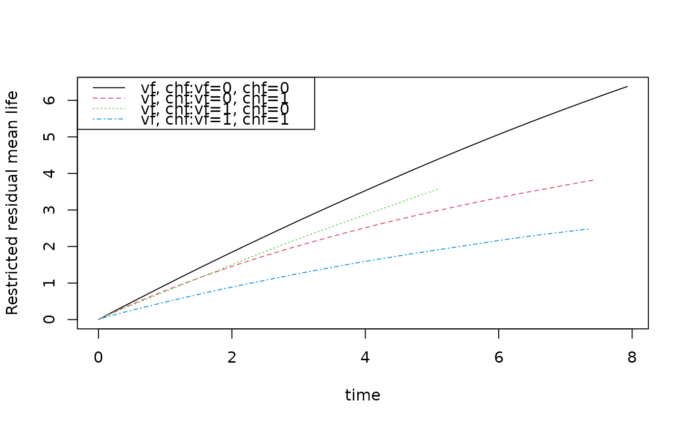

R/phreg.R
resmean.phreg.RdRestricted mean for stratified Kaplan-Meier or stratified Cox with martingale standard error. Standard error is computed using linear interpolation between standard errors at jump-times. Plots gives restricted mean at all times. Years lost can be computed based on this and decomposed into years lost for different causes using the cif.yearslost function that is based on integrating the cumulative incidence functions. One particular feature of these functions are that the restricted mean and years-lost are computed for all event times as functions and can be plotted/viewed. When times are given and beyond the last event time withn a strata the curves are extrapolated using the estimates of cumulative incidence.
resmean.phreg(x, times = NULL, covs = NULL, ...)phreg object
possible times for which to report restricted mean
possible covariate for Cox model
Additional arguments to lower level funtions
data(bmt); bmt$time <- bmt$time+runif(408)*0.001
out1 <- phreg(Surv(time,cause!=0)~strata(tcell,platelet),data=bmt)
rm1 <- resmean.phreg(out1,times=10*(1:6))
summary(rm1)
#> strata times rmean se.rmean years.lost
#> tcell.0..platelet.0 0 10 5.863357 0.2565963 4.136643
#> tcell.0..platelet.1 1 10 7.631943 0.3423848 2.368057
#> tcell.1..platelet.0 2 10 7.277595 0.7092800 2.722405
#> tcell.1..platelet.1 3 10 7.670133 0.5624523 2.329867
#> tcell.0..platelet.0.1 0 20 9.888979 0.5393848 10.111021
#> tcell.0..platelet.1.1 1 20 13.506424 0.8000236 6.493576
#> tcell.1..platelet.0.1 2 20 12.102992 1.5545578 7.897008
#> tcell.1..platelet.1.1 3 20 12.787688 1.4675871 7.212312
#> tcell.0..platelet.0.2 0 30 13.602966 0.8315407 16.397034
#> tcell.0..platelet.1.2 1 30 18.901077 1.2693129 11.098923
#> tcell.1..platelet.0.2 2 30 16.191183 2.4006181 13.808817
#> tcell.1..platelet.1.2 3 30 17.766043 2.4422103 12.233957
#> tcell.0..platelet.0.3 0 40 17.159980 1.1235955 22.840020
#> tcell.0..platelet.1.3 1 40 23.880189 1.7372363 16.119811
#> tcell.1..platelet.0.3 2 40 19.549262 3.2030954 20.450738
#> tcell.1..platelet.1.3 3 40 22.433308 3.3838532 17.566692
#> tcell.0..platelet.0.4 0 50 20.482491 1.4110527 29.517509
#> tcell.0..platelet.1.4 1 50 28.324312 2.1962430 21.675688
#> tcell.1..platelet.0.4 2 50 22.746066 4.0537077 27.253934
#> tcell.1..platelet.1.4 3 50 26.115612 4.2306934 23.884388
#> tcell.0..platelet.0.5 0 60 23.741503 1.7038090 36.258497
#> tcell.0..platelet.1.5 1 60 32.761919 2.6868325 27.238081
#> tcell.1..platelet.0.5 2 60 25.942869 4.9475997 34.057131
#> tcell.1..platelet.1.5 3 60 29.671579 5.1599232 30.328421
par(mfrow=c(1,2))
plot(rm1,se=1)
plot(rm1,years.lost=TRUE,se=1)

## years.lost decomposed into causes
drm1 <- cif.yearslost(Event(time,cause)~strata(tcell,platelet),data=bmt,times=10*(1:6))
summary(drm1)
#> strata times intF11 intF12 se.intF11 se.intF12
#> tcell.0..platelet.0 0 10 3.117709 1.0189337 0.2487168 0.1703640
#> tcell.0..platelet.1 1 10 1.710906 0.6571508 0.3238371 0.1870598
#> tcell.1..platelet.0 2 10 1.876133 0.8462718 0.6339002 0.4726319
#> tcell.1..platelet.1 3 10 1.358612 0.9712555 0.5303112 0.3617385
#> tcell.0..platelet.0.1 0 20 7.517541 2.5934800 0.5441125 0.3861259
#> tcell.0..platelet.1.1 1 20 4.230932 2.2626440 0.7414056 0.5327632
#> tcell.1..platelet.0.1 2 20 4.568441 3.3285671 1.4876741 1.1718344
#> tcell.1..platelet.1.1 3 20 3.569496 3.6428155 1.3003034 1.1906737
#> tcell.0..platelet.0.2 0 30 12.105104 4.2919302 0.8508090 0.6161436
#> tcell.0..platelet.1.2 1 30 6.884349 4.2145744 1.1740887 0.9057073
#> tcell.1..platelet.0.2 2 30 7.260749 6.5480681 2.3532842 1.9703406
#> tcell.1..platelet.1.2 3 30 5.780381 6.4535761 2.0925003 2.0815355
#> tcell.0..platelet.0.3 0 40 16.718613 6.1214068 1.1626261 0.8509979
#> tcell.0..platelet.1.3 1 40 9.731564 6.3882476 1.6095839 1.2998336
#> tcell.1..platelet.0.3 2 40 9.953057 10.4976810 3.2212026 2.8144103
#> tcell.1..platelet.1.3 3 40 8.302355 9.2643368 2.8717930 2.9841024
#> tcell.0..platelet.0.4 0 50 21.367797 8.1497115 1.4766444 1.0945194
#> tcell.0..platelet.1.4 1 50 12.985916 8.6897717 2.0479342 1.7124221
#> tcell.1..platelet.0.4 2 50 12.645364 14.6085701 4.0899601 3.7302581
#> tcell.1..platelet.1.4 3 50 11.809291 12.0750975 3.6736805 3.8902358
#> tcell.0..platelet.0.5 0 60 26.016981 10.2415161 1.7930387 1.3471502
#> tcell.0..platelet.1.5 1 60 16.246785 10.9912958 2.5105722 2.1389388
#> tcell.1..platelet.0.5 2 60 15.337672 18.7194592 4.9591157 4.6873793
#> tcell.1..platelet.1.5 3 60 15.442562 14.8858581 4.5899554 4.7979154
#> total.years.lost
#> tcell.0..platelet.0 4.136643
#> tcell.0..platelet.1 2.368057
#> tcell.1..platelet.0 2.722405
#> tcell.1..platelet.1 2.329867
#> tcell.0..platelet.0.1 10.111021
#> tcell.0..platelet.1.1 6.493576
#> tcell.1..platelet.0.1 7.897008
#> tcell.1..platelet.1.1 7.212312
#> tcell.0..platelet.0.2 16.397034
#> tcell.0..platelet.1.2 11.098923
#> tcell.1..platelet.0.2 13.808817
#> tcell.1..platelet.1.2 12.233957
#> tcell.0..platelet.0.3 22.840020
#> tcell.0..platelet.1.3 16.119811
#> tcell.1..platelet.0.3 20.450738
#> tcell.1..platelet.1.3 17.566692
#> tcell.0..platelet.0.4 29.517509
#> tcell.0..platelet.1.4 21.675688
#> tcell.1..platelet.0.4 27.253934
#> tcell.1..platelet.1.4 23.884388
#> tcell.0..platelet.0.5 36.258497
#> tcell.0..platelet.1.5 27.238081
#> tcell.1..platelet.0.5 34.057131
#> tcell.1..platelet.1.5 30.328421